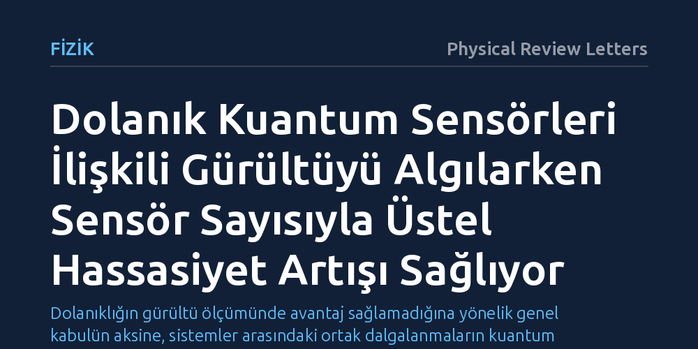

FIZIK · Physical Review Letters · 2026-10-13
Araştırmacılar, kuantum sensörlerinde dolanıklığın ilişkili gürültü kaynaklarını tespit etmede bir üstünlük sağlayıp sağlamadığını kuramsal olarak inceledi. Sonuçlar, bağımsız gürültünün aksine ilişkili dalgalanmalarda dolanık sensörlerin duyarlılığının sensör sayısıyla üstel olarak arttığını gösterdi.
Dolanıklığın gürültü ölçümünde avantaj sağlamadığına yönelik genel kabulün aksine, sistemler arasındaki ortak dalgalanmaların kuantum üstünlüğüyle tespit edilebileceğini gösterir.

Kuantum teknolojilerinde temel amaçlardan biri, atomik ölçekteki manyetik veya elektriksel değişimleri yüksek hassasiyetle ölçebilen kuantum sensörleri geliştirmektir. Birden fazla sensör arasındaki kuantum dolanıklığından yararlanarak ölçüm hassasiyetini klasik sınırların ötesine taşımak teorik olarak mümkündür. Ancak pratik ortamlarda kuantum sistemleri çevresel etkileşimler ve gürültü nedeniyle hızla kararlılığını yitirir; bu durum kuantum avantajının kaybolmasına yol açar.
Önceki çalışmalar, her sensörün birbirinden bağımsız ve rastgele faz bozulmasına maruz kaldığı senaryolarda dolanıklığın hiçbir sinyal-gürültü avantajı sağlamadığını kesin biçimde ortaya koymuştu. Bu durum, gürültü ortamında kuantum dolanıklığının faydasız olduğu algısını pekiştirdi. Ancak gerçek kuantum işlemcilerinde gürültü her zaman bağımsız değildir; kontrol alanlarındaki sapmalar veya çok parçacıklı sistemlerin etkileşimleri sensörler arasında ortak, yani ilişkili gürültü yaratır. Araştırmacılar, bu tür ilişkili gürültü alanlarında dolanıklığın bir avantaj sağlayıp sağlayamayacağını sorguladı.
Çalışmada, açık kuantum sistemlerinin çevreyle etkileşimini tanımlayan standart Lindblad faz bozulması modeli temel alındı. Araştırma ekibi, harici kontrol dalgalanmalarından veya kritik sınırdaki çok cisimli fiziksel hedeflerden kaynaklanan ortak gürültü alanlarını matematiksel olarak kurguladı.
Sistemin algılama gücünü nicelleştirmek için kuramsal fizikte parametre kestiriminin nihai sınırını belirleyen kuantum Fisher bilgisi kullanıldı. Ekip, sensör durumunun gürültü alanlarının kütle merkezi modundaki dalgalanmaları ne kadar hassas yakalayabildiğini analitik olarak hesapladı. Bu türetimlerde, laboratuvardaki ölçüm ve sıfırlama adımlarının yavaş gerçekleştiği gerçekçi donanım koşulları da hesaba katıldı.
Analizler, ilişkili gürültü alanlarının merkez modundaki dalgalanmalar tahmin edilirken dolanıklığın belirgin bir hassasiyet artışı sağladığını gösterdi. Bağımsız gürültü senaryolarında dolanıklık hiçbir üstünlük getirmezken, güçlü arka plan dalgalanmalarının bulunduğu ilişkili ortamlarda dolanık sensörlerin duyarlılığı sensör sayısına bağlı olarak üstel biçimde arttı.
Bu üstel kuantum avantajı, özellikle ölçüm ve sistem sıfırlama süreçlerinin yavaş kaldığı 'tek atım sınırlı' rejimde ortaya çıkmaktadır. Elde edilen bulgu, çevresel gürültünün yalnızca bastırılması gereken bir kusur olmadığını, doğru tasarlanmış dolanık kuantum durumları sayesinde gürültünün kendi yapısının benzersiz bir hassasiyetle haritalanabileceğini kanıtladı.
Bu teorik sonuç, günümüzün süperiletken kübitleri ve iyon tuzakları gibi yakın dönem kuantum donanımlarının gürültü profilini çıkarmak için yeni bir yol sunuyor. Kuantum işlemcilerindeki hata kaynaklarını ve faz kaybı dinamiklerini yüksek hassasiyetle belirlemek, hata toleranslı sistemlere geçişin en önemli basamaklarından biridir.
Bunun yanı sıra yöntem, karmaşık çok parçacıklı kuantum durumlarının ve kritik faz geçişlerinin yaydığı gürültüyü ölçerek bu durumları inceleyen yeni nesil bir algılama aracı potansiyeli taşıyor. Teorik temelleri atılan bu yaklaşım, yakın vadeli kuantum işlemcilerinde deneysel olarak test edilmeyi bekliyor.